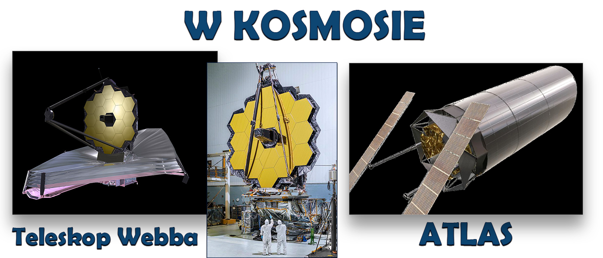
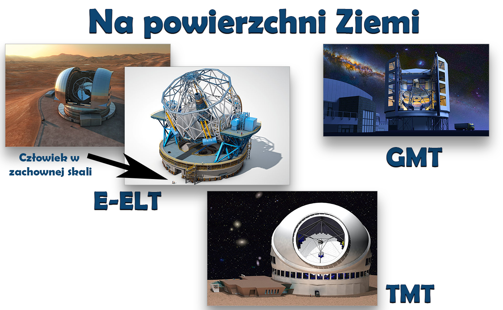
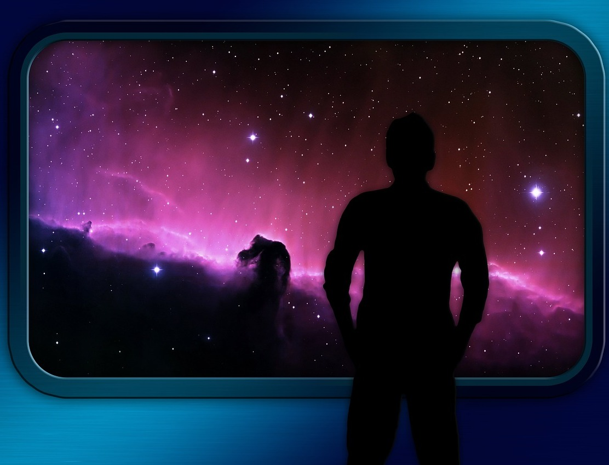

Następcą najsłynniejszego teleskopu na orbicie - teleskopu Hubble’a ma być Kosmiczny Teleskop Jamesa Webba, który ma być dwa razy lżejszy, jednakże dużo potężniejszy i pozbawiony wielu wad obecnego króla orbity okołoziemskiej. Teleskop Webba będzie skupiał się głównie na badaniu formowania się i ewolucji pierwszych gwiazd i galaktyk oraz systemów planetarnych. Główne zwierciadło teleskopu jest zbudowane z berylu, a delikatne instrumenty urządzenia będzie chronić wielowarstwowa osłona przeciwsłoneczna zbudowana z kaptonu. Owe instrumenty będą wyspecjalizowane w celu nagrywania najsłabszych sygnałów, a cały teleskop może obserwować nawet 100 obiektów jednocześnie. Cały teleskop ma wymiary 22 na 12 metrów. Urządzenie ma zostać wyniesione w przestrzeń kosmiczną 5 października 2018 roku z kosmodromu w Gujanie Francuskiej
Jednakże teleskop Webba ma być głównie rejestratorem promieniowania podczerwonego, gdyż właśnie w ten sposób można efektywniej badać zimne obiekty. Optycznym następcą teleskopu Hubble’a może być urządzenie o nazwie ATLAST, który ma być umieszczony w punkcie libracyjnym między Słońcem, a Ziemią, a do spektrum jego potencjalnych osiągnięć należy odkrycie tlenu w atmosferach planet pozasłonecznych oraz odkrycie życia pozaziemskiego. Jednakże urządzenie to ma być wyniesione dopiero około 2030 roku, a na dzień dzisiejszy nie został nawet wybrany format urządzenia, który poleci w Kosmos.

Ponadto w planach są trzy potencjalnie największe teleskopy optyczne na powierzchni Ziemi:
Ekstremalnie Wielki Teleskop Europejski w Chile (E-ELT), którego średnica zwierciadła ma wynieść 39 metrów, a jego powierzchnia zbierająca będzie 13 razy większa niż u obecnie największych teleskopów. Teleskop ten będzie kilkanaście razy bardziej dokładny niż Kosmiczny Teleskop Hubble’a, dzięki czemu E-ELT będzie mógł badać skład atmosfer planet pozasłonecznych. Teleskop będzie się znajdował w odległości 20 km od teleskopu VLT, a jego miejscem będzie szczyt góry, która kiedyś miała ponad 3000 metrów wysokości, jednakże na potrzeby budowy teleskopu, szczyt wypłaszczono przy użyciu ładunków wybuchowych. Projekt ma pochłonąć miliard euro, a teleskop ma funkcjonować już w 2022 roku.
Thirty Meter Telescope, którego miejscem mają być Hawaje (podobnie jak E-ELT teleskop ten miał stanąć w Chile, jednakże wówczas oba urządzenia byłyby skazane na obserwację tych samych części nieba, w związku z czym teleskop trzydziestometrowy przeniesiono na półkulę północną), a średnica teleskopu ma wynieść 30 metrów. Teleskop ma stanąć na wzgórzu wulkanu Manua Kea (na wysokości 4050 metrów), niedaleko Teleskopów Kecka. Projekt jest inwestycją międzynarodową, a jej koszt ma wynieść 1,5 miliarda dolarów, które pochodzić będą z USA, Indii, Japonii, Chin i Kanady. Urządzenie ma rozpocząć badania w 2023 roku.
Gigantyczny Teleskop Magellana, który jest budowany w Chile (na wysokości 2550 metrów) i zajmie się takimi pojęciami jak ciemna materia, ciemna energia czy czarne dziury. Jego główne zwierciadło będzie się składać z siedmiu segmentów o średnicy 8,4 metra każdy. Obecnie większa część segmentów została już odlana, a teleskop ma zacząć funkcjonować w 2022 roku.

Znacznym udoskonaleniem naziemnych teleskopów optycznych może być wykorzystanie cieczy do zbierania informacji, tj. zastąpienie szkła rtęcią, która umieszczona na okrągłej podstawie i poddana ruchowi obrotowemu, tworzy dzięki sile bezwładności zwierciadło paraboliczne. Takie rozwiązanie jest kilkukrotnie tańsze, jednak może obserwować tylko te obiekty, które znajdują się bezpośrednio nad takim teleskopem, gdyż przy przechyleniu ciecz nie zmienia położenia razem z całą konstrukcją. Rozwiązaniem tego problemu ma być wykorzystanie specjalnego rodzaju cieczy oraz magnesów.
W najbliższej przyszłości powinniśmy oglądać pierwsze owoce pracy pięćset metrowego radioteleskopu w Chinach. Celami badań tego urządzenia ma być głównie poszukiwanie pozaziemskich cywilizacji, co byłoby przełomem w historii naszego gatunku.
Około roku 2034 ma rozpocząć się eksperyment eLISA, który jest przygotowywany przez Europejską Agencję Kosmiczną. Celem projektu ma być bezpośrednie wykrycie fal grawitacyjnych. eLISA ma być ogromnym interferometrem Michelsona, który będzie składać się z trzech sond kosmicznych, które mają okrążać Słońce tworząc wspólnie ogromny trójkąt równoboczny o boku miliona kilometrów.
Do zaobserwowania pozostaje ponadto niepotwierdzone obserwacyjnie promieniowanie Hawkinga, które miały by emitować czarne dziury. Teorię o istnieniu takiego promieniowania opublikował w 1974 roku brytyjski astrofizyk Stephen Hawking, który starał się rozwiązać wiele problemów związanych z samym istnieniem czarnych dziur.
Podsumowanie

Jak widać ludzkość nauczyła się już w pewnym stopniu interpretować otaczającą rzeczywistość. Jesteśmy jak dziecko, które znając częściej występującą połowę alfabetu, może zrozumieć fragmenty książki, w której ciągle znajdują się informacje, których nie potrafi ono odczytać. Podobnie jest z nami. Wszechświat ciągle wysyła do nas miliony informacji, które zignorowane przez nas, bezpowrotnie dla nas przepadają, pędząc dalej przez bezkresną otchłań z nadzieją, że ktoś może zwróci na nie uwagę. Jednakże dziecko jest pełne chęci do nauki - chce poznać pozostałe znaki. Pcha je do tego ciekawość, ciekawość tego, co znajduje się w książce. Dla nas jako ludzkości najważniejsze jest, aby nie zatracić w sobie tej dziecięcej ciekawości, która od wieków pcha nas do dekodowania kolejnych wierszy książki, rozpostartej nad naszymi głowami.